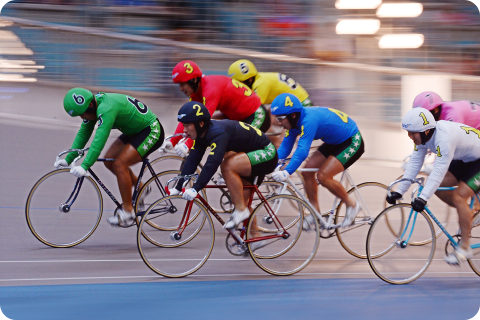
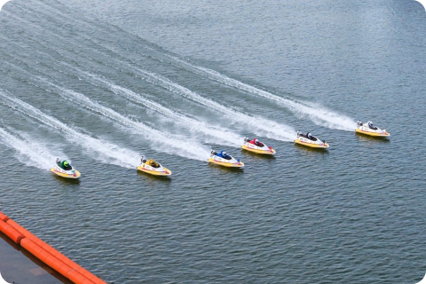

<!-- Header -->
<%- include('../_ejs_eng/top.ejs', {
    title: "KCYCLE",
    url: "../../"
}) %>

<!-- 레이아웃 -->
<div class="lytLayout eng">
    <div class="layoutArea">

        <!-- 상단영역 -->
        <div class="layoutTop">
            <!-- Top -->
            <%- include('../_ejs_eng/header.ejs', {
                url: "../../"
            }) %>
        </div>
        <!-- //상단영역 -->

        <!-- 중단영역 -->
        <div class="layoutContainer" id="container">

            <!-- 서브 콘텐츠 영역 -->
            <div class="layoutSubCont">

                <!-- 서브 컨텐츠 내용이 들어오는 영역-->
                <!-- 서브 탑 (타이틀) -->
                <%- include('../_ejs_eng/sub_top.ejs', {
                    location: [],
                    subTitle: 'Company',
                    subText: 'Establishment of KSPO in commemoration of<br>the 1988 Seoul Olympics.',
                    url: "../../",
                    visualClass: "bg06",
                }) %>

                <div class="layoutContArea">
                    
                    <div class="cptContSpeedom eng">
                        <div class="contArea">
                            <div class="list">
                                <div class="img"></div>
                                <div class="cont">
                                    <div class="comTitH2 mRow">
                                        <h2>K-Cycling</h2>
                                    </div>
                                    <div class="comBasicTxt">
                                        <p class="txt">
                                            Official Olympic Sports (KEIRIN): A cycle race in which seven athletes compete for rankings by racing five laps on a 333.33m velodrome.
                                            <br><br>
                                            It has been stably operated in Korea for approximately 30 years as a betting sport, generating annual revenues of over 1.2 billion dollars.
                                        </p>
                                    </div>
                                </div>
                            </div>
                            <div class="list bt">                                
                                <div class="cont">
                                    <div class="comTitH2 mRow">
                                        <h2>K-Boating </h2>
                                    </div>
                                    <div class="comBasicTxt">
                                        <p class="txt">
                                            A motorboat race is held on water, where six participants compete for rankings by racing two to three laps on a 600m racecourse.
                                            <br><br>
                                            It has been stably operated as a betting sport in Korea since 2002, generating annual revenues of more than 470 million dollars.
                                        </p>
                                    </div>
                                </div>
                                <div class="img"></div>
                            </div>
                        </div>
                    </div>
                    
                </div>

                <!-- //서브 컨텐츠 내용이 들어오는 영역-->

                <!-- 서브 바텀 (담당자) -->
                <!-- //서브 컨텐츠 내용이 들어오는 영역-->
                
            </div>
            <!-- //서브 콘텐츠 영역 -->

        </div>
        <!-- //중단영역 -->

        <!-- 하단영역 -->
        <div class="layoutFooter">
            <!-- Footer -->
            <%- include('../_ejs_eng/footer.ejs', {
                url: "../../"
            }) %>
        </div>
        <!-- //하단영역 -->

    </div>
</div>


<!-- Bottom -->
<%- include('../_ejs_eng/bottom.ejs', { }) %>